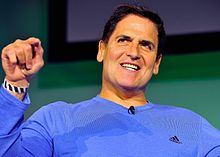

Mark Cuban was born in Pittsburgh, Pennsylvania. His father, Norton Cuban,
was an automobile upholsterer and Mark has described his mother, Shirley, as
someone with "a different job or different career goal every other week." He
grew up in the suburb of Mount Lebanon, in a Jewish working-class family. His
paternal grandfather changed the family name from "Chabenisky" to "Cuban" after
his family emigrated from Russia through Ellis Island. His maternal
grandparents, who were also Jewish, came from Romania.
Cuban's first step into
the business world occurred at age 12, when he sold garbage bags to pay for a
pair of expensive basketball shoes. At age 16, Cuban took advantage of a
Pittsburgh Post-Gazette strike by running newspapers from Cleveland to
Pittsburgh.
Rather than attending high school for his senior year, he enrolled as a
full-time student at the University of Pittsburgh where he joined the Pi Lambda
Phi International fraternity.
While attending the University of Pittsburgh, he
held a variety of jobs including a bartender, disco dancing instructor, and a
party promoter. After one year at the University of Pittsburgh, he transferred
to Indiana University in Bloomington, Indiana, and graduated from the Kelley
School of Business in 1981 with a B.Sc. in Business Administration.
He chose
Indiana's Kelley School of Business without even visiting the campus because "it
had the least expensive tuition of all the business schools on the top 10 list".
During college, he had various business ventures, including a bar, disco
lessons, and a chain letter.
In 1982, Cuban moved to Dallas, Texas, where he first found work as a bartender,
and then as a salesperson for Your Business Software, one of the earliest PC
software retailers in Dallas.
He was fired less than a year later, after meeting
with a client to procure new business instead of opening the store.
Cuban started a company, MicroSolutions, with support from his previous
customers from Your Business Software.
MicroSolutions was initially a system
integrator and software reseller. The company was an early proponent of
technologies such as Carbon Copy, Lotus Notes, and CompuServe. One of the
company's largest clients was Perot Systems.
In 1990, Cuban sold MicroSolutions to CompuServe—then a subsidiary of H&R
Block—for $6 million. He made approximately $2 million after taxes on the deal.
In 1995, Cuban and fellow Indiana University alumnus Todd Wagner started
Audionet, combining their mutual interest in Indiana Hoosier college basketball
and webcasting.
With a single server and an ISDN line, Audionet became
Broadcast.com in 1998. By 1999, Broadcast.com had grown to 330 employees and
$13.5 million in revenue for the second quarter. In 1999, Broadcast.com helped
launch the first live-streamed Victoria's Secret Fashion Show. That year, during
the dot com boom, Broadcast.com was acquired by Yahoo! for $5.7 billion in
Yahoo! stock.
After the sale of Broadcast.com, Cuban diversified his wealth to avoid exposure
to a market crash. In 2011, Cuban was No. 211 on Forbes' list of "World's
Richest People", with a net worth of $2.6 billion.
The Guinness Book of Records
credits Cuban with the "largest single e-commerce transaction", after he paid
$40 million for his Gulfstream V jet in October 1999.
Cuban continues to work with Wagner in another venture, 2929 Entertainment,
which provides vertically integrated production and distribution of films and
video.
On September 24, 2003, the firm purchased Landmark Theatres, a chain of 58
arthouse movie theaters.The company is also responsible for the updated version
of the TV show Star Search, which was broadcast on CBS. 2929 Entertainment
released Bubble, a movie directed by Steven Soderbergh, in theaters and on DVD
on the same day in January 2006 as a simultaneous release.
Cuban was featured on the cover of the November 2003 premiere issue of Best
magazine announcing the arrival of High Definition Television. Cuban also was
co-founder (with Philip Garvin) of AXS TV (formerly HDNet), the first
high-definition satellite television network.
In February 2004, Cuban announced that he would be working with ABC television
to produce a reality television series, The Benefactor.
The premise of the
six-episode series involved 16 contestants trying to win $1 million by
participating in various contests, with their performances being judged by
Cuban. It premiered on September 13, 2004, but due to poor ratings, the series
was canceled before the full season aired.
Cuban financially supported Grokster in the Supreme Court case, MGM v. Grokster.
He is also a partner in Synergy Sports Technology, a web based basketball
scouting and video delivery tool, used by many NBA teams.